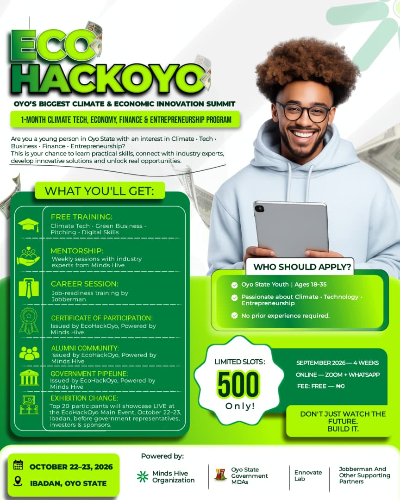

▣
HACKATHON PROGRAM
September 2026 · 4 Weeks · Online
REGISTRATION IS NOW OPEN
MINDS HIVE PRESENTS
ECO
HACKOYO
Oyo's Biggest Climate & Economic Innovation Summit
A free 1-month Climate Tech, Economy, Finance & Entrepreneurship program for Oyo State youth — followed by a 2-day live summit in Ibadan where the best ideas are exhibited before government representatives, investors and sponsors.
Convened by Olufemi Paul
·
Powered by Minds Hive Organization

500 SLOTS ONLY
FREE ₦0
ECOHACKOYO MAIN EVENT STARTS IN — IBADAN, OCT 22–23, 2026
00Days
:
00Hours
:
00Minutes
:
00Seconds
QUICK VIEW
EcoHackOyo At A Glance
⌖
MAIN SUMMIT
Oct 22–23, 2026 · Ibadan
♟
WHO IT'S FOR
Oyo State Youth, Ages 18–35
♛
COST
Free — ₦0 · 500 Slots Only
ABOUT THE SUMMIT
Where climate action
meets economic impact.
Are you a young person in Oyo State with an interest in Climate, Tech, Business, Finance or Entrepreneurship? EcoHackOyo is your chance to learn practical skills, connect with industry experts, develop innovative solutions and unlock real opportunities.
EcoHackOyo brings together students, innovators, policymakers, entrepreneurs and stakeholders to learn, connect, collaborate and create solutions for a stronger, greener Oyo State economy.
01LEARNFree hands-on training.
02BUILDSolve a real challenge.
03PITCHPresent live in Ibadan.
“
Don't just watch the future. Build it.
TWO WAYS TO TAKE PART
Pick your track.
EcoHackOyo runs as two connected experiences — join whichever fits you, or both.
Join the Economic Hackathon
Have an idea that can solve a real economic problem? Spend a month learning, building with a team and pitching your solution before a panel of judges — with a shot at showcasing live at the Main Summit.
Register as a Contestant →Attend the EcoHackOyo Summit
Be part of the biggest Economic Hackathon Summit in Oyo State. Two days of leadership sessions, panel conversations, networking and the live hackathon exhibition — open to any young person passionate about economic development.
Register to Attend →HACKATHON PROGRAM
What you'll get.
Free Training
Climate Tech, Green Business, Pitching and Digital Skills.
Mentorship
Weekly sessions with industry experts from Minds Hive.
Career Session
Job-readiness training delivered by Jobberman.
Certificate of Participation
Issued by EcoHackOyo, powered by Minds Hive.
Alumni Community
Stay connected long after the program ends.
Government Pipeline
Visibility with Oyo State government representatives.
Exhibition Chance
The top 20 participants showcase LIVE at the EcoHackOyo Main Event, October 22–23 in Ibadan, before government representatives, investors and sponsors.
CALL FOR INNOVATORS
Don't just identify the problem.
Build the solution.
We're calling on young innovators, developers, entrepreneurs, students, creatives, researchers and problem-solvers to develop solutions to pressing economic challenges.
Youth Employment
Entrepreneurship & MSMEs
Agriculture & Agribusiness
Digital Economy
Education & Skills Development
Financial Inclusion
Sustainability
Local Economic Development
Creative Economy
Technology & Innovation
Identify &
Research
Identify a real economic challenge and research it deeply enough to understand what's really going on.
Build With
a Team
Develop an innovative solution and build it together — mentors help you turn ideas into real, working solutions.
Present &
Pitch
Create and present your solution, then pitch it before a panel of judges — with exhibition at the Main Event.
WHO SHOULD APPLY?
Bring your perspective.
Build something meaningful.
No prior experience required — just an Oyo State youth (18–35) passionate about climate, technology or entrepreneurship. Both tracks are open to:
01Students & YouthCurious minds ready to learn.
02Young EntrepreneursBuilders looking for real problems.
03Tech & Digital InnovatorsDevelopers and designers.
04Researchers & CreativesStorytellers and problem solvers.
05Community BuildersCivic-minded changemakers.
06Youth-Led Teams & StartupsExisting ventures welcome too.
WHY TAKE PART?
Come for the challenge.
Leave with more.
Beyond training and mentorship, EcoHackOyo connects you with real opportunities: exposure to potential partners and stakeholders, recognition for outstanding solutions, and prizes for winning teams.
Join the hackathon →01Showcase your ideaPresent in front of investors and government representatives.
02Mentorship & expert guidanceWeekly sessions with Minds Hive industry mentors.
03NetworkingMeet industry leaders, peers and potential co-founders.
04Prizes & recognitionRewards and opportunities for winning teams.
TIMELINE
Your EcoHackOyo journey.
01
NOWRegistration
Applications open for both the hackathon and the Main Summit — 500 slots only.
02
SEPT 2026Hackathon Program
4 weeks of training, mentorship and team-building — online via Zoom & WhatsApp.
03
SELECTIONTop 20 Chosen
The strongest solutions are shortlisted to exhibit live at the Main Event.
04
OCT 22–23Main Summit, Ibadan
Two days of panels, networking and the live pitch & exhibition.
POWERED BY
Built with community.
EcoHackOyo is powered by Minds Hive Organization, in partnership with Oyo State Government MDAs and supporting partners.
Minds Hive
Organization
Organization
Oyo State
Government MDAs
Government MDAs
Ennovate Lab
Jobberman &
Other Partners
Other Partners
OP
Olufemi Paul — Convener
Leading EcoHackOyo on behalf of Minds Hive Organization.MOMENTS
Behind the scenes.
PARTNER WITH US
Put your brand in front of Oyo's next generation of builders.
Sponsors get visibility with 500 hackathon participants, live exposure at the two-day Ibadan summit in front of government representatives and investors, and a direct line to Oyo State's most driven young talent.
Become a Sponsor →
Brand visibility to 500+ youth
Exhibition day exposure
Government & investor audience
CSR / ESG alignment
Logo on flyer & website
FAQ
Questions?
We've got you.
Can't find your answer? Reach us using the contact details in the footer.
What is EcoHackOyo?+
EcoHackOyo is Oyo State's biggest Climate & Economic Innovation Summit — a free 1-month Climate Tech, Economy, Finance & Entrepreneurship program for Oyo State youth, culminating in a live 2-day summit in Ibadan.
What's the difference between the hackathon and the Main Summit?+
The hackathon is a 4-week online program (September 2026) where you build a solution with a team. The Main Summit (October 22–23, Ibadan) is the live 2-day event with panels, networking and the exhibition — anyone can register to attend, whether or not you joined the hackathon.
Who can apply?+
Oyo State youth aged 18–35 with an interest in Climate, Tech, Business, Finance or Entrepreneurship. No prior experience is required.
How much does it cost?+
Both the hackathon program and Main Summit attendance are completely free — ₦0. Slots for the hackathon are limited to 500.
How is the hackathon delivered?+
Online, via Zoom and WhatsApp, over 4 weeks in September 2026, with weekly mentorship sessions and a career session by Jobberman.
How do I get to showcase at the Main Event?+
The top 20 hackathon participants are selected to showcase their solutions live at the EcoHackOyo Main Event in Ibadan, in front of government representatives, investors and sponsors.
How can my organization sponsor EcoHackOyo?+
Use the "Become a Sponsor" registration form to tell us about your organization and sponsorship interest — our team will follow up with tiers and next steps.
BE PART OF IT
Choose how you'd
like to join.
Pick the registration that fits you — takes less than 2 minutes.
Hackathon Contestant
Build a team, tackle a real economic challenge, and pitch your solution — with a shot at the Main Event exhibition.
Register as a Contestant →Main Summit Attendee
Attend the 2-day EcoHackOyo Summit in Ibadan — leadership sessions, panels, networking and the live exhibition.
Register to Attend →Sponsor / Partner
Put your organization in front of 500 young innovators, government representatives and investors.
Become a Sponsor →